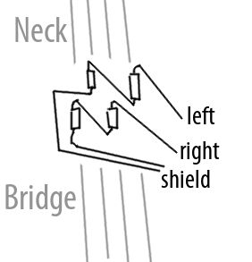
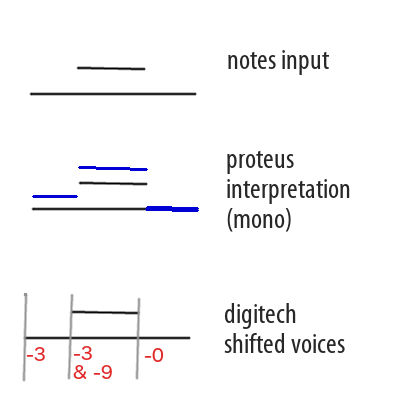

- Music/Sound:
- Duophonic guitar pickup
- VSTs for you
- Ringdown, VST
- Ed Myrol, VST
- Pianofax, VST
- PMer, VST
- Impulse Control, VST
- Music software for you
- Bedtime, resonators
- Keytrails, pitched delay line
- Parody, PD analog mockery
- Music devices at home
- Toy piano magnetic pickup
- Piano damper tricks
- Harmonizers
- Four string tunings
- Film Tech Archive:
- Motion film hand lab
- Infrared Viewer
- Vertical film drying rack
- Test strip printer
- Film tech small victories
- LED projector
- 16MM Framewise Transfer
- Photochemical
- Action camera color
- Blue reversal
- Carl:
- Show must've went on
- Contact
- Go home now
Duophonic Guitar Pickup
Note that this info is mostly superseded by this new section: Duophonic guitar pickup
This custom pickup outputs 2 signals instead of the standard 1 signal of a mono passive pickup. It is different than other stereo pickups in that individual strings are sent to one or the other of the 2 outputs. On my 4 string tenor guitar, I send the 1st and 3rd strings to the first output, and the 2nd and 4th strings to the second output. By processing the two outputs differently, one can achieve clearer chords through overdrive/distortion, selective inversion pitch shifting, and lots of other fun stuff. The whole project rides on the integration of a phono preamp, which makes the sound produced by the small custom pickups acceptable.
The materials for this project are real cheap. A phono preamp is cheaper than a typical instrument preamp, and it's got 2 channels.
Mine is built for my 4 string tenor style guitar, but you could sort something out for a 6 string guitar. You could alternate strings, or do an arbitrary pattern.
Maybe 1st 2nd and 4th string to L 3rd, 5th, 6th to R Would be interesting.
But I tend to think alternating strings is the best. So you can play chords through your fuzz and keep things separated a bit.
Magnets used are 1/8" circular neodymium magnets, 2 per inductor. Tested a couple different layouts until i was happy. The idea is to put the inductor as close to your string as is reasonable, then the magnet against it on the other side. This drilled by hand and mounted to acrylic with epoxy. The white epoxy was dusted with turmeric for color. The closer the pickup is mounted to bridge, the better the separation.
The inductors I'm using are 100mH 420 ohm digikey #495-5616-1-ND, but you could probably use any similar inductor that has a good footprint. I used some cheaper 100mH inductors for my toy piano pickup and they worked nicely. I think the output may have even been stronger.
I tested some hearing aid coils at 900mH. They were not as good actually, may not have had an iron core, maybe I just didn't employ them properly.
I used alligator clips to test the best layout, listening for good strong signal and best separation. The way you line up the polarity of everything can help with your separation. Please just test out each configuration. I personally ended up with this:
I didn't make a great drawing of the switching box I built to integrate the phono peamp, but here's the idea. It's passive.
Stereo 1/4" input
connects to
Dual RCA output to phono preamp
Dual RCA input from preamp
Each RCA channel from the preamp goes into a separate voltage divider potentiometer pad. I tested a few resistor/pot combinations until I was able to pad the preamp signal down to something that was in the range of guitar levels.
After the pads, the signal goes into a footswitch that swaps the two channels.
And finally, output to 2 mono 1/4" outputs.
Toy Piano Magnetic Pickup
These pickups were made with relatively weak magnets and were mounted haphazardly with school glue. I believe you could achieve an excellent toy piano pickup by using strong magnets, and an inductor per tine. This way you could position each precisely. The resulting system would have a much higher output which should help the noise problem. You could likely test placing a capacitor in line or an inductor to ground to filter out the sub 200hz nonsense passively before hitting the preamp. If this reduced the output strength too much, it'd be a matter of applying high-pass after the preamp.
To top
Piano Damper Tricks
Play with the dampers on your piano to achieve nice sympathetic vibrations. You can get a washy sustain-pedal resonance during staccato passages if you use some tricks with the sostenuto pedal or heavy objects.
To top
Harmonizers
I used to wonder about rackmount digital harmonizers. Turns out, it is great fun to use one with a MIDI keyboard to convert a monophonic signal into chords. I set up an E-mu Proteus FX to generate mono sounds from MIDI input. This signal went into the harmonizer to convert it into polyphonic output. I also added a modulator that applied incorrect keyscaling to the pitch of the Proteus sounds. This meant that the mono output of the Proteus FX was not following the pitch correctly at all. This results in different tonal colors from the harmonizer depending on how hard it's working to bring the input stream back into pitch. I noticed some really wild noises when retriggering notes. This was due to the Proteus nulling the incorrect pitch tracking during legato passages. When a held note was returned to, the Proteus would play the correct pitch. Here's a graphic:
To top
Four String Tunings
Six string standard tuning guitar is too hard to play. A tenor guitar clocks in at four strings and is nice and easy to make sense of with it's symmetrical layout. You will eventually tire of the wide spacing of the fifths tuning. When that happens, reach for a left-handed guitar and remove the two highest strings. All four strings of your resulting instrument will be re-entrant, tuned to inverted fifths. That is, each goes down a fourth instead of up a fifth. The shapes of chords will feel familiar but sound totally fresh, the voicings being much denser.
To top